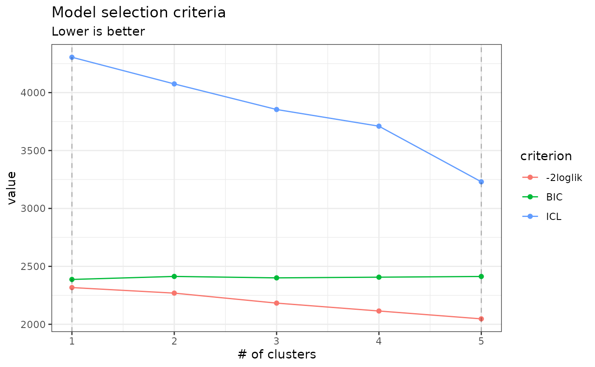

R/PLNmixturefamily-S3methods.R
plot.PLNmixturefamily.RdDisplay the criteria associated with a collection of PLNmixture fits (a PLNmixturefamily)
an R6 object with class PLNmixturefamily
a character, either "criteria" or "diagnostic" for the type of plot.
vector of characters. The criteria to plot in c("loglik", "BIC", "ICL"). Default is c("loglik", "BIC", "ICL").
A logical indicating whether to plot the value of the criteria in the "natural" direction (loglik - 0.5 penalty) or in the "reverse" direction (-2 loglik + penalty). Default to FALSE, i.e use the natural direction, on the same scale as the log-likelihood.
additional parameters for S3 compatibility. Not used
Produces either a diagnostic plot (with type = 'diagnostic') or the evolution of the criteria
of the different models considered (with type = 'criteria', the default).
The BIC and ICL criteria have the form 'loglik - 1/2 * penalty'
so that they are on the same scale as the model log-likelihood. You can change this direction and use the alternate form '-2*loglik + penalty', as some authors do, by setting reverse = TRUE.
data(trichoptera)
trichoptera <- prepare_data(trichoptera$Abundance, trichoptera$Covariate)
myMixtures <- PLNmixture(Abundance ~ 1 + offset(log(Offset)),
data = trichoptera, control_main = list(smoothing = "forward", iterates = 1))
#>
#> Initialization...
#>
#> Adjusting 5 PLN mixture models.
#> number of cluster = 1
number of cluster = 2
number of cluster = 3
number of cluster = 4
number of cluster = 5
#>
#> Smoothing PLN mixture models.
#> Going forward ++++
#> Post-treatments
#> DONE!
plot(myMixtures, reverse = TRUE)
